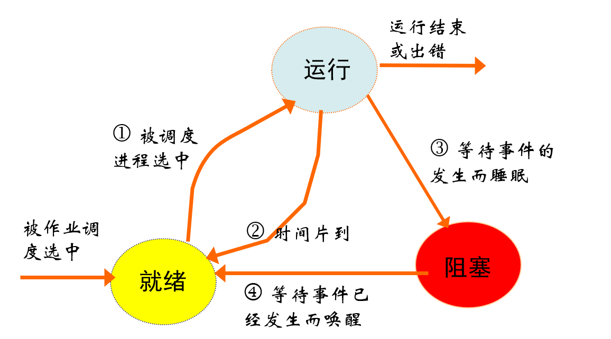
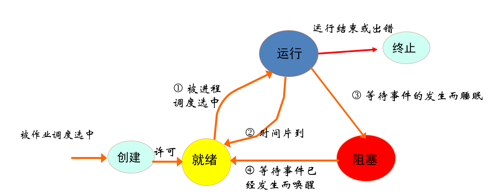
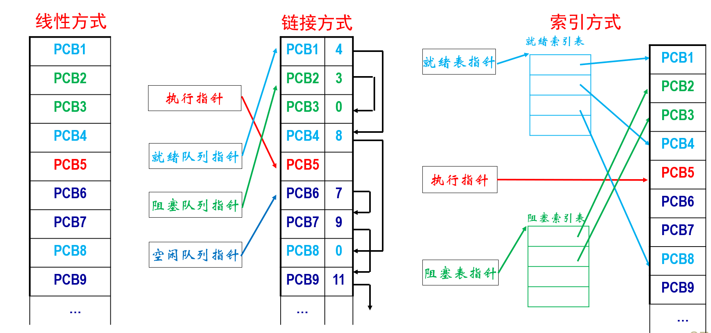
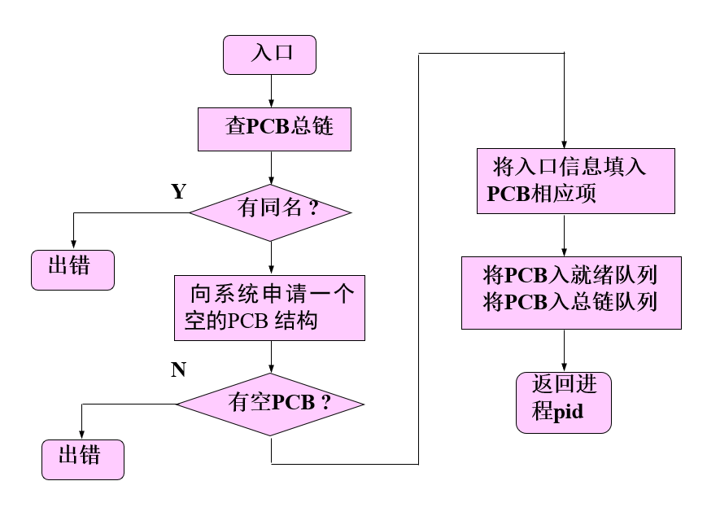
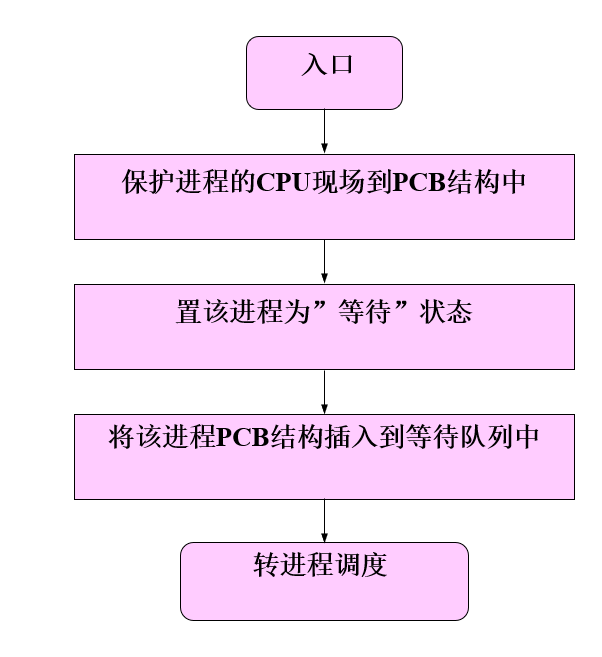
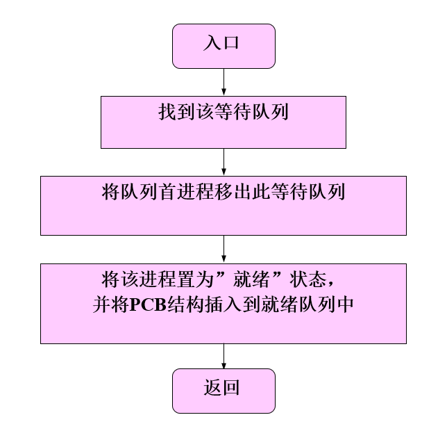
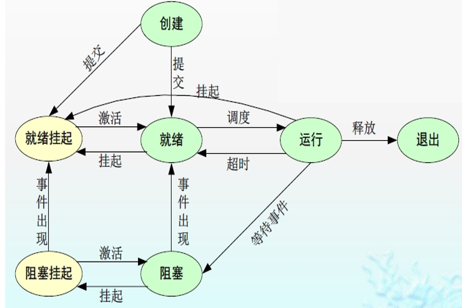
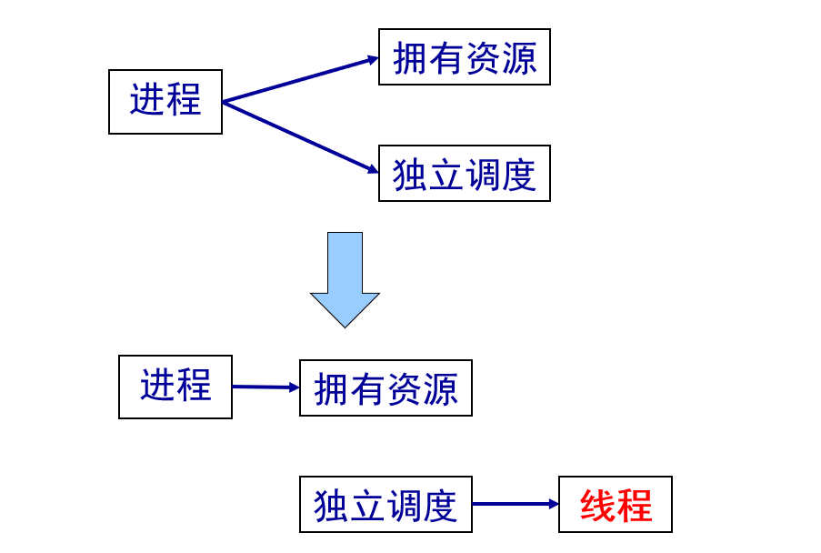
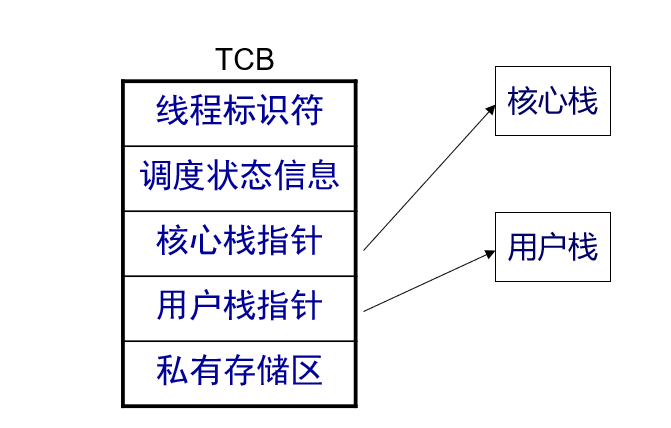
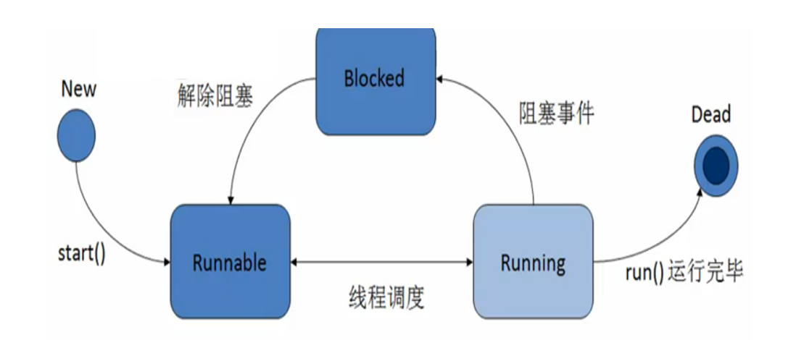

学习路径： 第一章 操作系统引论 第二章 进程的描述与控制 第三章 处理机调度与死锁 第四章 进程同步 第五章 存储器管理 第六章 虚拟存储器 第七章 输入/输出系统 第八章 文件管理 第九章 磁盘存储器管理
有向无循环图
引入进程的原因：为了程序的并发执行，并且对并发执行的程序加以描述和控制。
进程是程序的一个运行过程，是系统进行资源分配和调度的一个独立单位。
| 程序 | 进程 |
|---|---|
| 一组有序指令的集合 | 由程序、数据和PCB构成 |
| 静态性，存放在介质中，没有运动的含义 | 动态性，是进程实体的一次执行过程，有一定的生命周期 |
| 不可以并发执行 | 并发执行 |
| 程序不是竞争资源的基本单位 | 进程是竞争资源的基本单位（运行，分配资源） |
进程和程序不是一一对应的，一个程序可以对应多个进程，一个进程可以执行一个或几个程序！


进程=程序+数据+PCB
PCB：进程控制块(process control block)是进程的一部分，是OS中最重要的记录型数据结构，是进程存在的唯一标志，常驻内存。PCB描述进程与其他进程、系统资源的关系以及进程在各个不同时期的状态。
PCB记录了OS所需的、用于描述进程情况及控制进程运行所需的全部信息，使一个在多道程序环境下不能独立运行的程序成为一个能与其他进程并发执行的进程。 PCB结构类似于结构体。

- 进程和程序的一个本质区别是：前者是动态的，而后者为静态的。
- 进程所请求的一次打印输出结束后，将使进程状态从(D) A.运行态变为就绪态 B.运行态变为等待态 C.就绪态变为运行态 D.等待态变为就绪态
- 下列进程状态的转换中，不正确的是(B) A.运行态→就绪态 B.就绪态→等待态 C.就绪态→运行态 D.阻塞态→就绪态
进程控制是进程管理最基本的功能，一般由OS内核中的原语实现； 进程控制包括：进程创建、进程终止、进程阻塞与唤醒、进程挂起与激活
父进程(parent process)：创建进程的进程 子进程(progeny process)：被创建的进程
父进程创建子进程，子进程可继承父资源，撤销时应归还给父进程，父的撤销会撤销所有子进程。
引起进程创建的事件：用户登录、作业调度、提供服务、应用请求
进程创建过程：申请空白PCB→分配所需资源→初始化PCB→插入就绪队列

引起进程终止的事件：正常结束、异常结束、外界干预
引起进程阻塞的事件：
进程阻塞原语的形式：当进程需要等待某一事件完成时，它可以调用等待原语挂起自己。

block(chan):参数chan表示进程等待的原因。
进程唤醒原语的形式：当处于等待状态的进程所期待的事件来到时，由发现者进程使用唤醒原语唤醒它。
wakeup(chan)：参数chan表示进程等待的原因。

由于进程的不断创建，主存资源已不能满足所有进程运行的要求。OS将某些进程挂起，放到磁盘对换区，暂时不参加调度，以平衡系统负载。
挂起(Suspend)：把一个进程从内存转到外存，有以下三种情况：
激活(Activate)：把一个进程从外存转到内存，可能有以下几种情况：
注意：阻塞、挂起一般由OS实现，而唤醒与激活可由用户干预。

进程通信：进程间的信息交换。 低级进程通信：进程的同步和互斥，效率低（每次只能操作一个消息），通信对用户不透明（程序员干预）。 高级进程通信：效率高（可传递大量信息）、对用户透明
消息传递系统是当前应用最广的一种进程间的通信机制。信息单位是消息Message（报文）。
通信方式：
管道（pipe）：用于连接一个读进程和一个写进程以实现它们之间通信的一个共享文件，又名pipe文件。 管道机制的协调能力：对方是否存在、互斥、同步
套接字（Socket） 远程过程调用（RPC） 远程方法调用（RMI，Java）
Linux进程通信方式：管道、信号、信号量、共享内存、消息队列、套接字。
引入进程的目的：使多个程序并发执行，提高资源利用率及系统吞吐量 引入线程的目的：减少程序在并发执行时所付出的时空开销，使OS具有更好的并发性，适用于SMP结构的计算机系统。
对称多处理（Symmetrical Multi-Processing）技术，是指在一个计算机上汇集了一组多处理器（多CPU），各CPU之间共享内存子系统以及总线结构。

线程是进程内的一个相对独立的可调度的执行单元，一个进程可包含多个线程，它们可并发执行，共享进程的全部资源。
（1）轻型实体 （2）独立调度和分派的基本单位 （3）可并发实体 （4）共享进程资源
线程控制块TCB(thread control block)：线程标识符、一组寄存器、线程运行状态、优先级、线程专有存储区、信号屏蔽、堆栈指针 
| 进程 | 线程 | |
|---|---|---|
| 调度性 | 资源拥有的基本单位 | 调度和分派的基本单位 |
| 并发性 | 有并发性 | 更好的并发性 |
| 拥有资源 | 拥有系统资源 | 只有少量必要的寄存器等资源 |
| 独立性 | 高 | 低 |
| 系统开销 | 大 | 小 |
| 支持多处理机 | 一个进程运行在一个处理机 | 多线程分配到多个处理机上 |
引入线程后，进程作为资源分配的单位，可包括多个线程，但不再是一个可执行的实体。
线程状态：执行态、就绪态、阻塞态；线程状态转换与进程状态转换一样。

需要内核的参与，由内核完成线程的调度。其依赖于操作系统核心，由内核的内部需求进行创建和撤销。
线程切换不需要转换到内核空间；调度算法可以是进程专用的 线程的实现与OS平台无关
系统调用的阻塞问题 多线程应用不能利用多处理机进行多重处理的优点。
指不需要内核支持而在用户程序中实现的线程，其不依赖于操作系统核心，应用进程利用线程库提供创建、同步、调度和管理线程的函数来控制用户线程。
在多处理机系统中，内核可同时调度同一进程的多个线程； 如一个线程阻塞了，内核可调度其他线程（同一或其他进程）； 线程的切换比较快，开销小； 内核本身可采用多线程技术，提高执行速度和效率。
对用户线程切换，开销较大